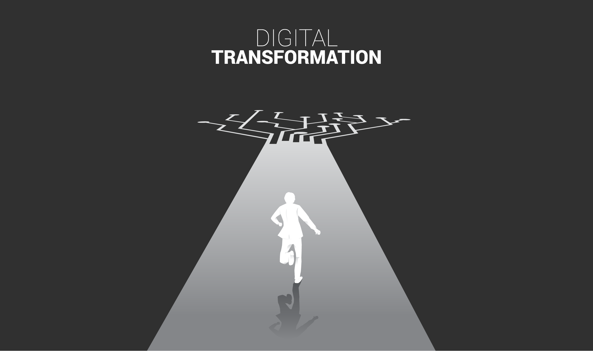

Contact UsThe African Continental Free Trade Area (AfCFTA) is poised to revolutionise cross-border trade, driving a circular economy powered by abundant raw materials, and enhanced manufacturing capabilities.
Dismantlement of barriers to trade is paving the way for seamless trade flows, and reduced friction across borders.
Transformative infrastructure investments are reshaping the capacity for bulk goods transportation: strategic trade corridors, railways, waterways, pipelines, one-stop border posts, multimodal hubs, and world-class seaports.
State-of-the-art hyperscale cloud datacenters on African soil are enabling the creation of cutting-edge digital infrastructure to complement and amplify these advancements.
Our vision is bold: a cloud-based digital trade facilitation platform with unparalleled scope, scale, and reach across the African Continent.
We see an unprecedented opportunity for Africa to sprint into the future with a clean-slate approach, designing and implementing a world-class digital platform that empowers all stakeholders in the free trade ecosystem.
Join us in shaping the future of digital trade. Whether you have the expertise to engineer this transformation or are eager to be an early adopter, we want to hear from you.